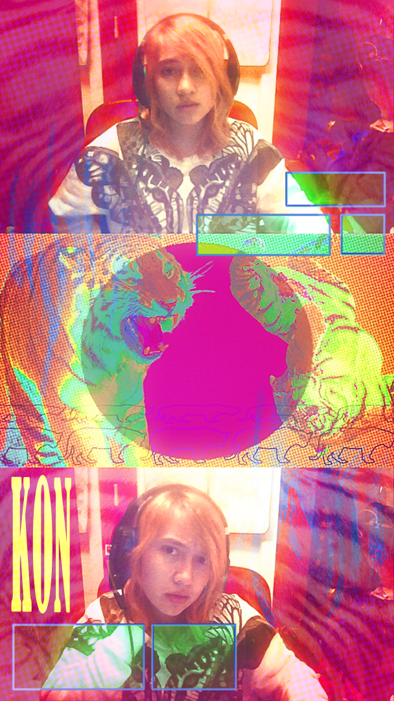
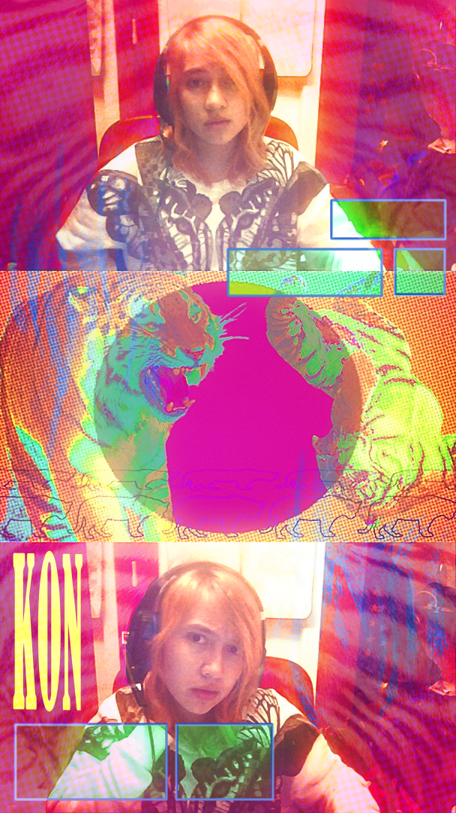

but I can hope
My life begins when I am percieved. Everything I do is performative, I can't help it. But I perform for myself. Regardless of what people think of my act. Though, I am socially aware enough to know that self obsession can become very annoying for the people surrounding you, so I will take it upon myself to direct this dissection of myself at something that inconveniences the least amount of people. Being an artist and dependant on unfinished projects, I - of course - will not just 'get a journal'. Because that's boring and stupid and doesn't work for me. I need full control over each page. And the digital world has handed me the perfect format on a silver platter.
 

Turning the Mess you made into a pretentious digital art peace can be quite the therapeutic action to take in response to your disappointment. I don't know how I let it come to this, but it happens again and agin and I ignore all patterns for the sake of convenience. Or exhaustion. My room could be seen as a reflection of my soul, I suppose, but also I think that's bullshit because I would know if my soul harboured mold. Is the mess relatable, though? I am grasping for validation here.
it's not funny anymore. it's not funny. it's not fucking funny, it's unfair. Get me out of here
it is getting so fucking unbearable. I don't know how much longer I can play this fucking game but I'm getting tired of it. sick and tired. I like pretending. I like acting. My whole life is a performance, it's what I was made to do, but I can't get even a second of authenticity in it anymore, if I don't shed this skin immediately. I don't know what to do. I am all alone in this. Is it really that hard to belive a perosn can be 2 things? Maybe even more than just 2? It'll be worth it one day. I'll look back and laugh at myself one day, but right now I can't help but feel helpless. It's not funny anymore, it's just tiring. It's so unfair. What did I do in my past life to make Karma think the only appropriate punishment is to psychologically torture a teenager with delusions of grandeur? That's funny as hell, I understand, but is it selfish of me to not consider the audience for a minute here? Watching the performer kill themselves can be entertaining, I suppose, but I don't want the show to be over just yet. It is simply unfair. It's so unfair. I try so hard, and I know it might not look like it, but I do. It feels so fucking humiliating every single day, people looking at me like I don't know what I am, like I don't know what I'm doing, I know what the fuck I'm doing. I try not to care anymore but unfortunately I am obsessed with the fact people can percieve me. Me, as a character. I know how they talk about me behind my back, I've heard it, but either leave me alone or say it to my face. Please. So I can be appropriately upset to your face in return. It's give and take in this world, but I'm starting to question whether or not I'm giving enough, or if I'm just a self righteous asshole who thinks everybody owes them basic human decency. Yes, respecting someone's identity is just about respect, but do I look respectable? No. I don't act like it, I don't dress like it, and I don't make an effort to. I try hard to intridoduce people to who I am, I try hard to get along with everyone, I try hard to be there for everyone, I try every single day to be better than I was yesterday so what the fuck am I doing wrong? What am I doing that could possibly justify denying me one of the only things I ever ask of people? Use my name, and know who I am. It's not that hard. Who the fuck cares what I wear? Why does it matter what I look like if you're just gonna talk about me behind my back. Quite literally. I heard them, sitting behind me. I know I'm weird, but who the fuck cares? I am getting so tired. I wore a dress once. That was the first time I've worn a dress in literal years. How does that imply I deserve being disrespected on such a personal level? I do not care, usually. I don't know why I'm getting so worked up about this, but maybe I needed it. I have been so comfortable and so used to people not treating me like shit that I've forgotten what shaped me. I am still being shaped. But I have forgotten how fucking awful it feels to be reminded that nobody actually takes you seriously. How could they? I don't take myself seriously. At least in public. But that really hurt, actually. I've been called a whoer tranny cunt before and it didn't hit as hard as people calling me a girl behind my back. Not even directly, just using female pronouns but I have forgotten what I really look like from the outside. I don't expect everyone to understand, but I needed to remember that, I suppose. I didn't know it was that hard to belive, though. Or to remember. I don't actually know those guys. But I know who I've been obsessing over for the past few months. And he doesn't see me as what I eally am either. He was so nice about it, I can't even be mad, but I can be upset. What did I expect? I can't do this any longer. I want it to finally be worth something. Why can't my petals grow back more beautiful than ever before already? I am just wilting and being trimmed back down. I can't wait another 3 years, te´he last 5 have been so exhausting already. I am counting the days, but it onlyfurther highligts that I can do absolutely nothing without risking going against the very thing I stand for. Authenticity cannot afford to be lost in days like these. I am supposed to be a messenger so I am going to further live my message. It could be the last thing I do and I would still stand with it. But I can't fucking wait for someone to hear me already
{kind=link}
{kind=link}